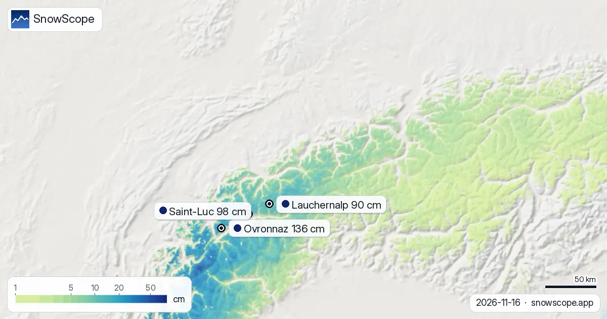

Snow reports · Europe snow by country
Europe snow by country: 140 km² of snow-covered ground in Albania this Monday, a gain of 80 km² in a day. That is 1 % of the high ground we map in Albania.
Albania snow report today: snow depth and new snow, 16 November 2026

140 km² of snow-covered ground in Albania this Monday, a gain of 80 km² in a day. That is 1 % of the high ground we map in Albania.
How much of the country is white
The snow line sits near 2,100 m. Last week's 40 km² has grown by 100 km².
Albania snow today, 16 November: snow cover, new snow, snow depth by height, the next days and the best resorts.

Andorra snow today, 16 November: snow cover, new snow, snow depth by height, the next days and the best resorts.

Austria snow today, 16 November: snow cover, new snow, snow depth by height, the next days and the best resorts.

Bosnia and Herzegovina snow today, 16 November: snow cover, new snow, snow depth by height, the next days and the best resorts.

Bulgaria snow today, 16 November: snow cover, new snow, snow depth by height, the next days and the best resorts.

Croatia snow today, 16 November: snow cover, new snow, snow depth by height, the next days and the best resorts.

Czechia snow today, 16 November: snow cover, new snow, snow depth by height, the next days and the best resorts.

Finland snow today, 16 November: snow cover, new snow, snow depth by height, the next days and the best resorts.

France snow today, 16 November: snow cover, new snow, snow depth by height, the next days and the best resorts.

Germany snow today, 16 November: snow cover, new snow, snow depth by height, the next days and the best resorts.

Greece snow today, 16 November: snow cover, new snow, snow depth by height, the next days and the best resorts.

Hungary snow today, 16 November: snow cover, new snow, snow depth by height, the next days and the best resorts.

Ireland snow today, 16 November: snow cover, new snow, snow depth by height, the next days and the best resorts.

Italy snow today, 16 November: snow cover, new snow, snow depth by height, the next days and the best resorts.

Kosovo snow today, 16 November: snow cover, new snow, snow depth by height, the next days and the best resorts.

Montenegro snow today, 16 November: snow cover, new snow, snow depth by height, the next days and the best resorts.

North Macedonia snow today, 16 November: snow cover, new snow, snow depth by height, the next days and the best resorts.

Norway snow today, 16 November: snow cover, new snow, snow depth by height, the next days and the best resorts.

Poland snow today, 16 November: snow cover, new snow, snow depth by height, the next days and the best resorts.

Portugal snow today, 16 November: snow cover, new snow, snow depth by height, the next days and the best resorts.

Romania snow today, 16 November: snow cover, new snow, snow depth by height, the next days and the best resorts.

Serbia snow today, 16 November: snow cover, new snow, snow depth by height, the next days and the best resorts.

Slovakia snow today, 16 November: snow cover, new snow, snow depth by height, the next days and the best resorts.

Slovenia snow today, 16 November: snow cover, new snow, snow depth by height, the next days and the best resorts.

Spain snow today, 16 November: snow cover, new snow, snow depth by height, the next days and the best resorts.

Sweden snow today, 16 November: snow cover, new snow, snow depth by height, the next days and the best resorts.

Switzerland snow today, 16 November: snow cover, new snow, snow depth by height, the next days and the best resorts.

UK snow today, 16 November: snow cover, new snow, snow depth by height, the next days and the best resorts.

Ukraine snow today, 16 November: snow cover, new snow, snow depth by height, the next days and the best resorts.